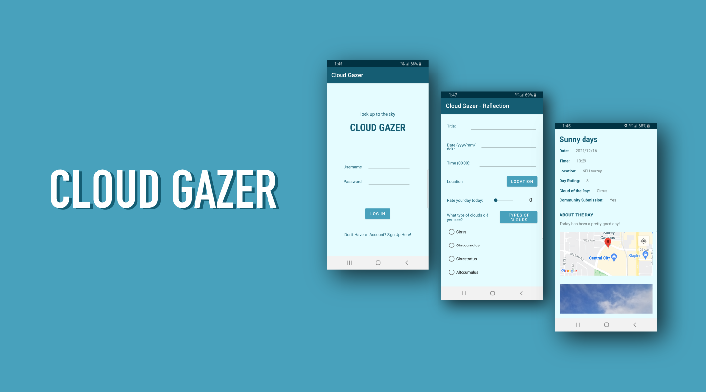

Cloud Gazer
Date
Fall 2021
Role
App Developer
Concept Creator
Tools
Android Studio
Team
Amena Salman
Overview
What is the sky like where you’re situated? Is it cloudy, sunny, or do you see the stars in the night sky? Let’s take a moment to pause, look up to the sky and reflect on the clouds as we reconnect with ourselves and the world around us.
Cloud Gazer is a health and wellbeing application built to help users take a moment out of their day to remove themselves from their worries and ground themselves by watching the clouds. Cloud Gazer guides users through a series of steps to help them reflect on their day, beginning with a 30 second guided meditation session to refocus their attention. Afterwards, the user starts the Reflection and takes a moment to write down how they are feeling. Users can record the type of clouds seen, note their thoughts and feelings, pinpoint their location and capture a photo of their surroundings. Cloud Gazers can choose to keep log entries private for personal journalling or choose to share with the Community, where Cloud Gazer users can share about their day.
